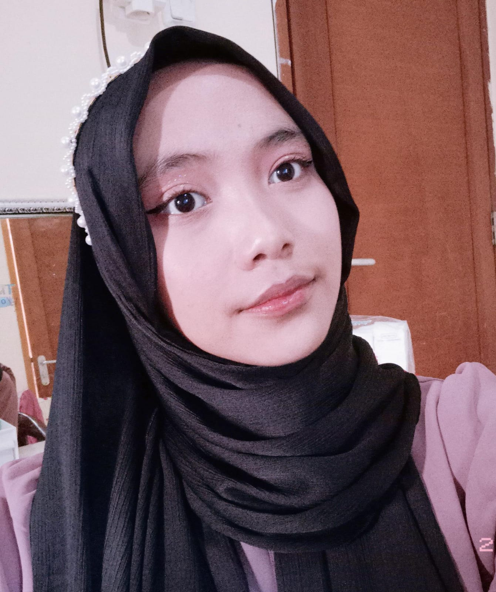

Profile
I am a student of the Digital Business Program at Jakarta State University, with a great interest in graphic design as well as business analysis and marketing. I enjoy combining creativity and analytical skills to produce effective marketing strategies and attractive visual designs. With this background, I am excited to contribute to a dynamic work environment that supports innovation.
Education
-
Undergraduate Student of Digital Business - Jakarta State University
2024 - Now
Senior High Scool - SMA Negeri 14 Depok
2021 - 2024
Junior High Scool - SMP Negeri 5 Depok
2019 - 2021